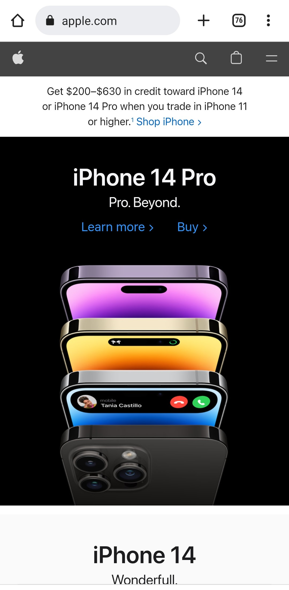

Visual Hierarchy
Apple
apple.com 
Visual hierarchy is the principle of arranging elements to show their order of importance.
“Visual hierarchy controls the delivery of the experience. If you have a hard time figuring out
where to look on a page, it's more than likely that its layout is missing a clear visual hierarchy.”
- The Nielsen Norman Group
On the Apple home page, the first very thing that catches our attention is the iPhone 14 Pro. It's the most prominent thing because it takes up most of the page, and it is featured right at the top. Above that we have our ("burger") site navigation/Mac navigation, where we can learn more about Mac-related products.
The nature of scrolling down places each of the subsequent sections, the Apple Watch, the iPad, the MacBook Pro, etc. Their position and size make them secondary on the visual hierarchy.
Hick's Law
Amazon
amazon.com
Hick's Law is a simple idea that the more choices you present your users with, the longer it will take them to reach a decision. There is even a formula for Hick's Law;
RT = a + b log2 (n)
Where “RT” is the reaction time, “(n)” is the number of stimuli present, and “a” and “b” are arbitrary measurable constants that depend on the task that is to be carried out and the conditions under which it will be carried out.
The objective of Hick's Law is to try and simplify the decision-making process. Amazon is a great example of it, while the "Shop by Department is clearly visible, Amazon places the focus on the search box. Just 1 option to choose from
and make sure you find what you're looking for. The list of departments is pretty long but it is visually broken down in 3 groups. Can you imagine the amount of choices that would appear on the homepage if Amazon designers did not have in mind Hick's Law?
PARC: Contrast
V76 by Vaughn
v76.com
Contrast is one of the most powerful visual design tools. Contrast is used to emphasize one or more elements on a page, or even to emphasize the difference between them. Contrast is created when two elements are very different. It creates visual interest for the user and can be used in many different ways.
On the 'V76 by Vaughn' homepage, we see a picture in all black and white, and a short statement saying "What it means to be well-groomed". We can see that the navigation bar is black with the logo in white. There is also a call-to-action button in the middle of the page "Meet Vaughn", and as we scroll down we can see more options, buttons, and text that have a really good contrast making it easier for the user to read and understand the purpose of each section on the page.